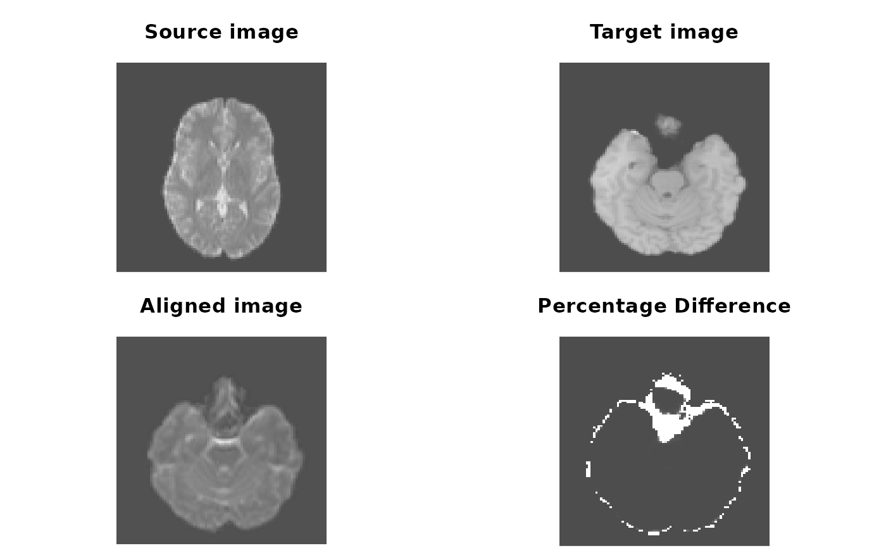

Registers 'CT' to 'MRI', or 'MRI' to another 'MRI'
Usage
register_volume(
source,
target,
method = c("rigid", "affine", "nonlinear"),
interpolation = c("cubic", "trilinear", "nearest"),
threads = detect_threads(),
symmetric = TRUE,
verbose = TRUE,
...
)Arguments
- source
source imaging data, or a
'nifti'file path; for example, 'CT'- target
target imaging data to align to; for example, 'MRI'
- method
method of transformation, choices are
'rigid','affine', or'nonlinear'- interpolation
how volumes should be interpolated, choices are
'cubic','trilinear', or'nearest'- threads, symmetric, verbose, ...
see
niftyreg
Value
See niftyreg
Examples
# \donttest{
source <- system.file("extdata", "epi_t2.nii.gz", package="RNiftyReg")
target <- system.file("extdata", "flash_t1.nii.gz", package="RNiftyReg")
aligned <- register_volume(source, target, verbose = FALSE)
source_img <- aligned$source[[1]]
target_img <- aligned$target
aligned_img <- aligned$image
oldpar <- par(mfrow = c(2, 2), mar = c(0.1, 0.1, 3.1, 0.1))
pal <- grDevices::grey.colors(256, alpha = 1)
image(source_img[,,30], asp = 1, axes = FALSE,
col = pal, main = "Source image")
image(target_img[,,64], asp = 1, axes = FALSE,
col = pal, main = "Target image")
image(aligned_img[,,64], asp = 1, axes = FALSE,
col = pal, main = "Aligned image")
# bucket fill and calculate differences
aligned_img[is.nan(aligned_img) | aligned_img <= 1] <- 1
target_img[is.nan(target_img) | aligned_img <= 1] <- 1
diff <- abs(aligned_img / target_img - 1)
image(diff[,,64], asp = 1, axes = FALSE,
col = pal, main = "Percentage Difference")

par(oldpar)
# }